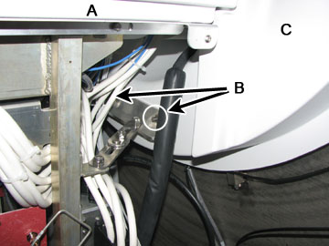
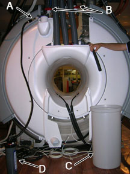
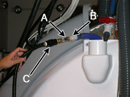
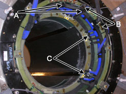
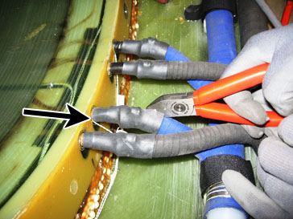
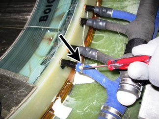
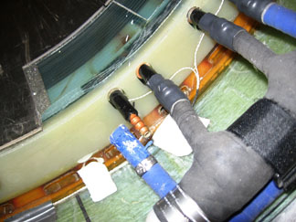
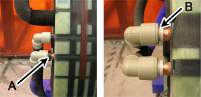
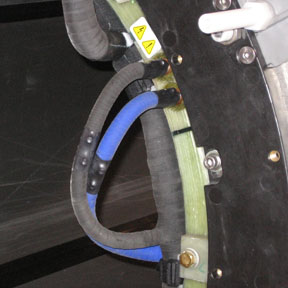
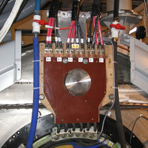

Operating Documentation
Direction 5500113, Rev# 3
Discovery MR450 1.5T Service Methods
Module Version 1.0, Version Date 9/24/09
Operating Documentation |
| Required Persons | Preliminary Reqs | Procedure | Finalization |
|---|---|---|---|
| 1 | Included in 'Procedure Timing' | 8 hours | Included in 'Procedure Timing' |
This procedure describes the replacement/installation process of the XRMB Manifold in the MR750 3.0T magnet.
| Item | Qty | Effectivity | Part# | Manufacturer | |
|---|---|---|---|---|---|
| Floor Sign, Warning: Authorized Personnel Only | 1 | - | Include in Safety Signage Kit (46-258770G4) or in 3.0T Warning Sign and Label Kit (2379494) | - | |
| XRMB Coolant Removal Kit (part of the HEC) | 1 | - | 5269683 | - | |
| Non-Magnetic Tools Kit | 1 | - | 5112581 | - | |
| 5 Gallon Pail | 1 | - | 2239133 | - | |
| Item | Qty | Effectivity | Part# | Manufacturer |
|---|---|---|---|---|
| XRMB Coolant Fluid (1 Gallon Container) (See Required Conditions) | 15 | - | 5174313 | - |
| XRMB Coolant Fluid (5 Gallon Container) (See Required Conditions) | 3 | - | 5174313-2 | - |
| XRMB Coolant Manifold Replacement Kit | 1 | - | 5316997 | - |
| Item | Qty | Effectivity | Part# | Manufacturer | |
|---|---|---|---|---|---|
| XRMB Manifold | 1 | - | - | - | |
| ||||
| Strong magnetic field! | ||||
| ferrous material can become dangerous projectiles in the presence of the magnetic field. | ||||
| do not bring any ferromagnetic tools or equipment into the magnet room. |
| ||||
| Electrical shock hazard! | ||||
| Contact with connectors leading to an energized power supply can cause electrical shock. Follow the lockout/tagout procedures while performing services to the electrical connection components. | ||||
| Coolant circulating through the gradient coil is in contact with live electrical conductors. Using the wrong type of coolant may result in electrical shock. Always use coolant specified by DVMR gradient coil service procedure. |
| ||||
| High water pressure! | ||||
| Coolant is circulating through the gradient coil. | ||||
| Follow the lockout/tagout procedures while performing services to the coolant circulation lines. |
| Condition | Reference | Effectivity |
|---|---|---|
Approximately 15 gallons of coolant fluid is needed for each XRMB installation. FEs will decide which type of container to order. | - | - |
Power to the XGD Cabinet is turned off and the LOTO procedures are implemented. | - | - |
Coolant circulation pump is turned off and LOTO procedures are implemented. | - | - |
Remove magnet rear end bell. Refer to the Rear End Bell Removal and Install procedure.
Remove bolts that secure the rear pedestal to the magnet and position the rear pedestal away from the magnet (see Illustration 1).
Illustration 1: Bolts Securing Rear Pedestal to Magnet

| A | Rear Pedestal |
| B | Bolts |
| C | Rear of Magnet |
Turn off the pumps at the Heat Exchange Cabinet (HEC) by pressing the corresponding key sequence for the blowers, gradient coil, and power electronics drives Table 1.
Table 1: HEC Control Panel Key Sequence
| Part | Key Sequence |
| Blowers | ▲ F1 |
| Gradient Coil (GC) | ▲ F2 |
| Power Electronics (PE) | ▲ F3 |
Press and hold ▲ while selecting the F-number key.
Perform the LOTO for the PGR PDU/Gradient Subsystem.
Turn off both PVC valves in coolant supply and return lines at the XRMB service-end (see Illustration 2).
Illustration 2: Disconnection Supply Manifold

| A | Pump-to-Manifold Adapter |
| B | Barbed Fitting |
| C | Reservoir |
| D | Manual Pump |
Place an empty reservoir (~ five gallon volume) close to the magnet service-end to accept discharge coolant (see Illustration 2).
Carefully disconnect manifold supply and return lines (one at a time) from the barbed connections below the closed valves by loosening hose clamps. Direct one line (either supply or return line) towards the reservoir and empty as much coolant as possible into the reservoir.
Obtain a one inch barbed fitting from the Coolant Removal Kit and attach it to the other line. Connect the pump-to-mainfold adapter to the other line through the barbed fitting (see Illustration 3).
Illustration 3: Manifold-to-Pump Connection

| A | Pump-to-Mainfold Adapter |
| B | Barbed Fitting |
| C | Manual Pump Connector |
Attach the manual pump from the Coolant Removal Kit to the other end of the adapter (if not attached already).
Start pumping air while observing coolant discharge.
Continue pumping until no more coolant comes out. This should not take more than 10 minutes - 15 minutes.
Disconnect the pump and the fitting. Place both into the Coolant Removal Kit bag.
Measure the amount of removed coolant using a measuring flask (1000 ml). Record the measure volume in the service log.
With the magnet rear end-bell and the rear pedestal removed, the XRMB manifolds are accessible.
Ensure that the XGD heat exchanger pump is turned off and LOTO procedures are implemented for coolant line service.
Ensure that both PVC valves in coolant supply and return lines at the XRMB service-end are turned off and coolant has been purged from the XRMB coil.
Remove the black anchor straps that are securing the manifolds to the XRMB coil (see Illustration 4).
Illustration 4: XRMB Manifold

| A | Manifold Anchor Strap |
| B | Manifold-to-Outer Coil Connection |
| C | Manifold-to-Inner Coil Connection |
Carefully cut open the heat shrinks at the manifold-to-inner coil connections. A non-magnetic side cutter is required. Illustration 5 calls out the temperature sensor and wire when removing the heat shrink.
Illustration 5: Removing Heat Shrink

| ||||
| Some manifold-to-coil connections have temperature sensors attached. Watch closely when cutting heat shrinks and avoid damaging the temperature sensors or wires. | ||||
The stainless steel hose clamp will be exposed once the heat shrink is removed. If this is a crimped clamp, it cannot be opened with a screwdriver. Use a combination of non-magnet screwdriver and needle nose pliers to push the clamp away from the coil and slide it towards the flexible hose (see Illustration 6).
Illustration 6: Removing the Crimped Hose Clamp

| ||||
| Do not apply force on the copper tube terminal. Bending the tube will cause severe damage and will greatly shorten the life of the XRMB coil. | ||||
Once the hose clamp is open or pushed off the copper tube terminal, disconnect the manifold hose from the tube terminal (see Illustration 7).
Illustration 7: Disconnecting the Manifold Hose

Repeat Steps 5 - 7 to disconnect all manifold hoses from XRMB inner coil.
At the XRMB outer coil connection, remove the heat shrinks (if there are any). Remove the black plastic rings at the water fittings (see Illustration 8).
Illustration 8: XRMB Outer Coil Connection - Water Fittings

| A | Black Plastic Ring |
| B | Gap between Inner and Outer Sleeve (black plastic ring removed) |
Close the gap between the inner and outer sleeve of the fitting (see Illustration 8). Pull the plastic fitting off the copper tube terminal.
The newer version of the manifold does not have the plastic water fitting. Instead, the manifold is directly connected to the tube terminal. In this case, remove the hose clamp and disconnect the manifold hoses from the XRMB outer coil (see Illustration 9).
Illustration 9: Manifold-to-Outer Coil Connection

Align the supply manifold (blue, p/n 5268005) with the copper tube terminal at the XRMB inner coil. Push the manifold extension hoses onto the copper terminals.
Apply the stainless steel clamps (provided with the Manifold Replacement Kit) to the manifold-to-inner coil connection and tighten the clamps with a non-magnetic screwdriver.
Apply the rubber splicing tape (provided with the Manifold Replacement Kit) to the clamps and any exposed copper tube terminals.
At the XRMB outer coil, connect the manifold to the copper tube with the following steps:
Push the plastic water fitting (attached to the manifold) all the way towards the coil.
Separate the inner and outer sleeve of the plastic fitting (see Illustration 8).
Place the plastic ring between the inner and outer sleeve to keep them separated (see Illustration 8).
For the newer version of the manifold (without the plastic water fitting), directly connect the manifold hoses to the outer coil tube terminals. Apply stainless steel clamps (provided with the Manifold Replacement Kit) to the manifold-to-outer coil connection and tighten the clamps with a non-magnetic screwdriver.
Apply black anchor straps to secure the manifold to the XRMB inner coil.
Repeat the above steps to install the return manifold (black, p/n 5268152).
Connect the supply and return manifold to the barbed fitting of the main coolant lines on top of the magnet. Secure the connection with stainless steel hose clamps. Open the main coolant line valves.
Secure the extension hoses to the XRMB busbar board using a tie wrap (see Illustration 10).
Illustration 10: Main Coolant Line Connection

Remove the LOTO for the PGR PDU/Gradient Subsystem.
Refer to the HEC Coolant Fill and Coolant Leak Check to add coolant to the heat exchanger reservoir, turn on the heat exchanger pumps, and check the coolant system for leaks. The volume added should be close to that of the discharged coolant (refer to XRMB Coil Water Removal, Step 13).
Restore magnet rear end bell. Refer to the Rear End Bell Removal and Install document for the proper procedure.
Restore the rear pedestal by attaching the rear pedestal to the magnet with the two bolts (see Illustration 1).
Perform a check scan to ensure the system is functioning correctly.